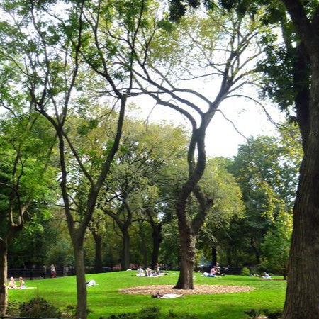
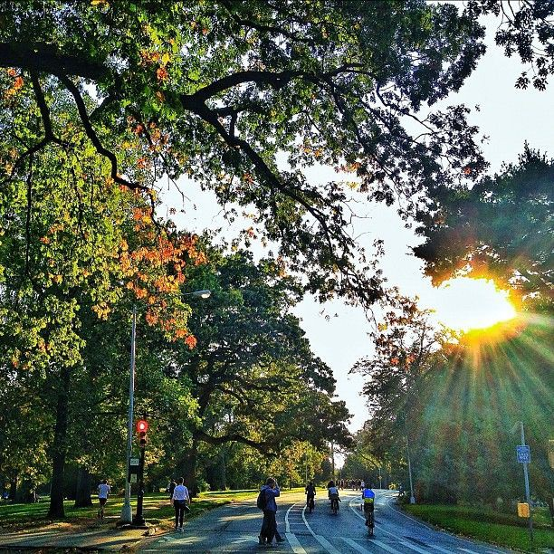
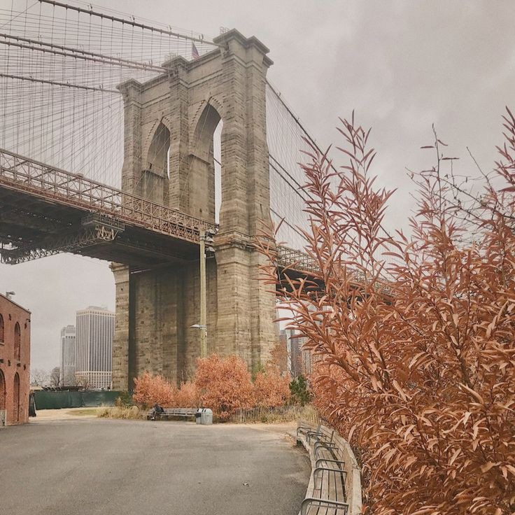
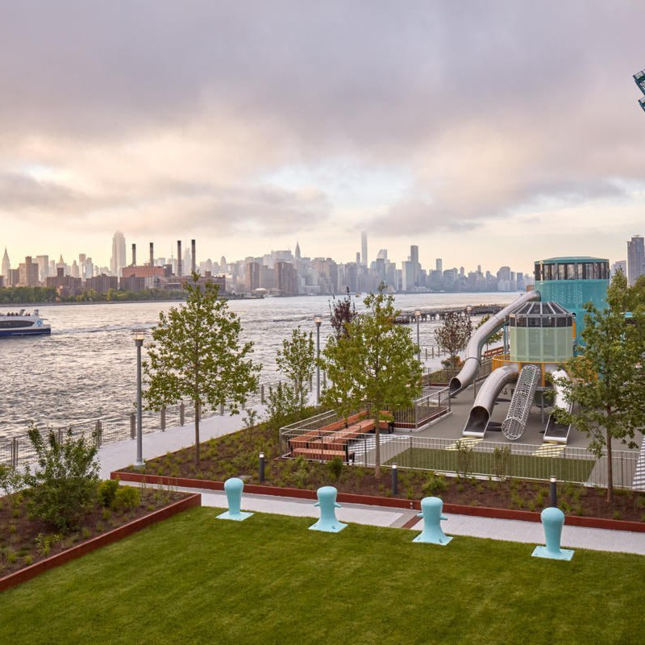
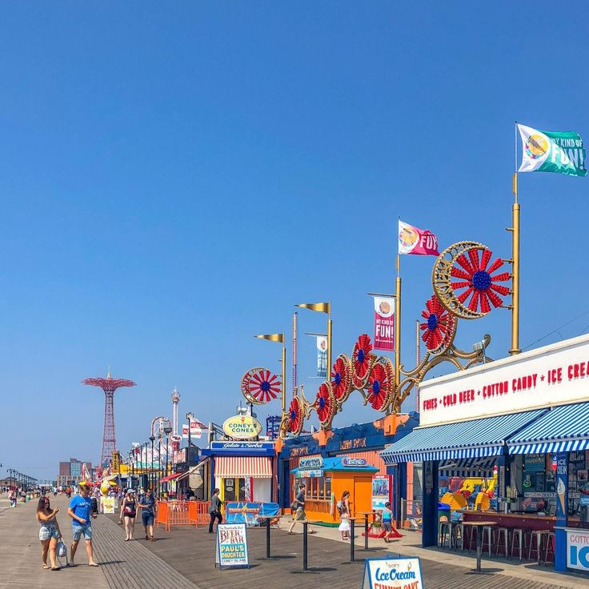
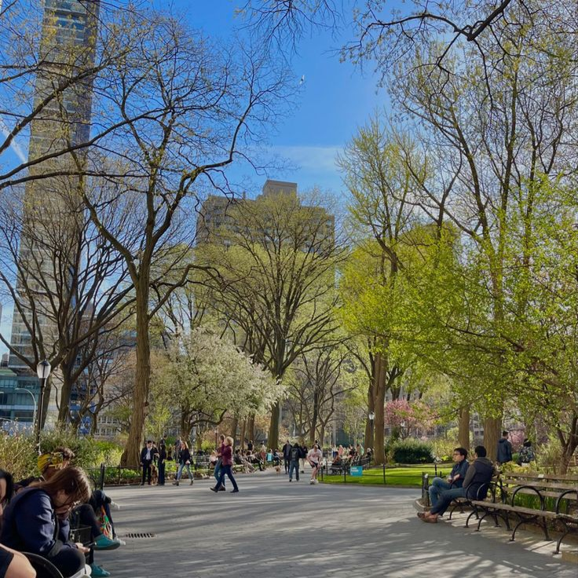

Made with extra cream cheese for a denser, richer, and creamier base,
New York–style cheesecake is the ultimate version of this decadent, indulgent dessert.
While creative pies made with all manner of dough, cheese,
and toppings can be found throughout the city,
iconic New York–style pizza consists of thin crust that’s malleable enough to be folded in half.
Made with thick slices of pastrami on rye bread,
with spicy brown mustard and a kosher dill pickle on the side,
pastrami sandwiches are one of the signature sandwiches of the City That Never Sleeps.
Its delicious banana pudding—made with fresh bananas, vanilla pudding,
and vanilla wafers—makes it a must-try on any NYC food crawl.
|
 Tompkins Square Dog Run |
 Prospect Park |
 Brooklyn Bridge Park |
|
 Domino Park |
 Coney Island |
 Madison Square Park |
The Metropolitan Museum of Art.
The Metropolitan Museum of Art is one of the world's largest and finest art museums.
Its collections include 1.5 million works of art spanning 5,000 years of world culture,
from prehistory to the present and from every part of the globe so if you're intrested in art,
you totally should visit there.
Empire State Building
The building's Art Deco architecture, height, and observation decks
have made it a popular attraction but if you're afraid of heights,
you should skip this because it would totally be horrifying for you